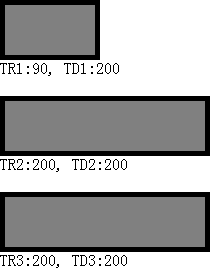
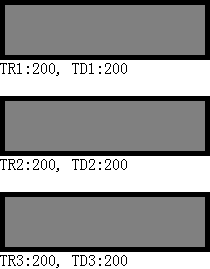

根据 CSS 2.1 规范的描述，如果一个 TABLE 的 'table-layout' 特性的值为 'auto'，那么设置在 TABLE 及 TD 上的宽度未必是它们的最终宽度，它们的最终宽度取决于它们的内容。
当单元格的内容的尺寸较大时，单元格会被撑大，设置的宽度会被忽略，从而影响到该单元格所在列、及其所在表格的最终宽度。
关于自动布局的表格的宽度计算的更多信息，请参考 CSS 2.1 规范 Automatic table layout 中的内容。
在 IE6 IE7 IE8(Q) 中，如果一个 TABLE 的 'table-layout' 特性的值为 'auto'，并且其中某个单元格中包含无内容的左浮动元素时，计算该单元格的宽度时将忽略这个左浮动元素。
这个问题会导致页面在某些浏览器下布局混乱。
| IE6 IE7 IE8(Q) |
|---|
分析以下代码：
<table style="width:100px; border:5px solid black;" cellspacing="0" cellpadding="0"> <tr
id="tr1"> <td id="td1"> <div id="d1" style="float:left; width:200px; height:50px;
background:gray;"></div> </td> </tr> </table> <div
id="info1"></div> <br /> <table style="width:100px; border:5px solid black;"
cellspacing="0" cellpadding="0"> <tr id="tr2"> <td id="td2"> <div id="d2"
style="float:right; width:200px; height:50px; background:gray;"></div> </td> </tr>
</table> <div id="info2"></div> <br /> <table style="width:100px; border:5px
solid black;" cellspacing="0" cellpadding="0"> <tr id="tr3"> <td id="td3"> <div
id="d3" style="float:left; width:200px; height:50px; background:gray;"> </div>
</td> </tr> </table> <div id="info3"></div> <script> function $(id)
{ return document.getElementById(id); } $("info1").innerHTML = "TR1:" + $("tr1").offsetWidth + ", TD1:"
+ $("td1").offsetWidth; $("info2").innerHTML = "TR2:" + $("tr2").offsetWidth + ", TD2:" +
$("td2").offsetWidth; $("info3").innerHTML = "TR3:" + $("tr3").offsetWidth + ", TD3:" +
$("td3").offsetWidth; </script>
上面代码分为三组，每一组均为一个一行一列的表格中包含一个200x50的浮动的 DIV 元素。区别为第一组中 DIV 左浮动、无内容，第二组 DIV 右浮动、无内容，第三组 DIV 左浮动、有内容。
这段代码在不同浏览器中运行结果如下：
| IE6 IE7 IE8(Q) | IE8(S) Firefox Chrome Safari Opera |
|---|---|
|  |  |
可见，当 TABLE 的 'table-layout' 为 'auto'（其默认值就是 'auto'），并且其单元格内的子元素左浮动，且无内容时：
对于右浮动元素及内容非空的左浮动元素，在IE中不存在此现象。
避免在 TD 元素内出现左浮动、内容为空的元素。
| 操作系统版本: | Windows 7 Ultimate build 7600 |
|---|---|
| 浏览器版本: |
IE6
IE7 IE8 Firefox 3.6 Chrome 4.0.302.3 dev Safari 4.0.4 Opera 10.51 |
| 测试页面: | ie_table_float_width.html |
| 本文更新时间: | 2010-07-2 |
TABLE TD table-layout auto width float 表格 单元格 宽度 浮动